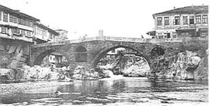
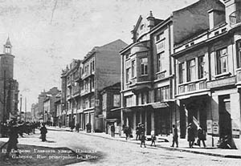
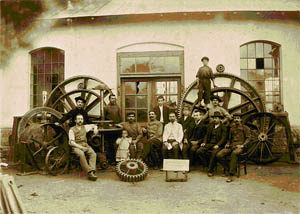

Gabrovo is a town with unique history. The beginning of this history is marked with the transformation of Turnovgrad into a capital of the Second Bulgarian Kingdom in 12th century as well as the subsequent significance of the road winding through the ‘Shipka” Pass. A settlement was created and inhabited by open-minded and skilful in warfare people who took the road protection. They had the privilege to pay fewer amounts of taxes, as well as to retain the ownership of their land and harvest. The local people established their lives as an integral part of the Bulgarian state. They erected a church, a monastery and related their existence to the conveyance of St. Petka’s relics. The cult of her is kept even nowadays. The Ottoman conquest of the state did not entirely change their means of living and it hardly affected their belonging to orthodoxy, manners and customs. They continued to guard the pass and for that reason they belonged to the detachments of the ‘dervetnzhii’, as the road guardians were called at that time. Their task was to guard the passing caravans and civil servants for which they bore a joint responsibility. For a short time they belonged to lands of an army leader but later became part of the grand vizier’s people. A representative of the ‘king’s’ power was the Aga of the “has” (land), the leader of the military band was a Bulgarian and the local priest was a leader of the citizens. For privileges such as carrying guns, not providing food for major military units and half-payment of taxes they were given a sultan’s resolution, confirmed by each new sultan. Their number increased as the years were passing - from 96 families in 1478 to 500 families in 1545, the population reached about 3000 inhabitants at the end of 17th century. The historical sources describe them as quite different physically, but predominantly they were young, of average height, with brown hair, beards, moustaches and shaved heads. They prided themselves on being independent people as described by Evliya Chelebi, one of the most famous Turkish travelers, in 1662, when he had to defend himself against a military squad armed with rifles and axes and carrying a drum, as well as a flag with the Christian cross on it. Gabrovo people raised the four basic pillars of the Bulgarian nation - the Bulgarian community, the movement for independent church, the new Bulgarian School and the movement for recognition of the Bulgarians as a separate nation within the territory of the Ottoman Empire. The word of the mayors of Gabrovo, called “chorbadzhii” (rich men), carried weight before the voivode (chieftain) of Turnovo and even in Tsarigrad (Istanbul) before The Great Gate. It was a Gabrovo citizen who arranged the construction of the first Bulgarian orthodox church in Tsarigrad, as well as the issue of a sultan’s decree for the separation of the Bulgarian nation from the community called ‘rumeli milet’ (Byzantine people), represented by the Greek Ecumenical Patriarchate. With the funds raised by the people of Gabrovo and after Vasil Aprilov’s initiative, the first secular school of new Bulgaria was opened. The school was followed as a model of education throughout Bulgaria. During the years of the Russian-Turkish war of liberation, Gabrovo was one of the ten Bulgarian towns with greatest contribution to the victorious end. Locals reinforced the volunteer’s bands, provided protective bands and workers for the road construction, as well as for the building of defense and military equipment, they spied out the ground and led the military columns to the way of the Russian forces, to the south of the Balkan Mountain Range, gave shelter to thousands of refugees, established hospitals, orphanages and homes for the elderly, and at the end of the battles also a camp for the captured Turkish soldiers.In the newly created state the intellectuals from Gabrovo became the basis of the state government for which they contributed with deputies such as the first prime minister, a Minister of Education and a Minister of War. Their power was concentrated in the foundation of the Bulgarian industry with Ivan Kalpazanov’s factories and his successors. Ivan H. Berov brought in the electricity in his production process in addition to many other innovations. On account of that he was called ‘the Japanese in the Balkans’. Here in Gabrovo, Pencho Semov developed and enriched his entrepreneurship skills and was considered ‘the Bulgarian Rockefeller’ by his contemporaries. Because of its huge industrial power the English called the town ‘the Bulgarian Manchester’. Тhe participants in the unification of the Principality of Bulgaria with Eastern Roumelia, the declaration of the Bulgarian Independence and the wars of liberation of Bulgarian lands in Edirne region in Thrace and Macedonia represent the national pride of Gabrovo people. 10 ministers, 11 generals and 25 big industrialists, writers, poets and scientists came from Gabrovo. The achievements of the years before 1944 provided a basis for an industrial town famous for its weaving, knitwear, leather and telpher industries, as well as for its institutes of technological development. The changes in 1989 resulted in transformation of the industrial ‘giants’ into small and medium robotized companies exporting production all over the world.